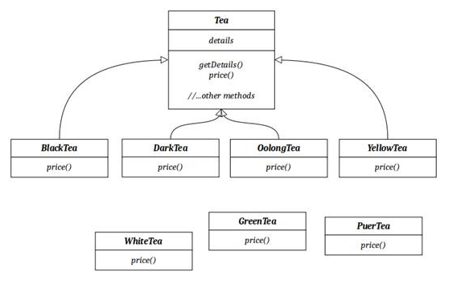

抽丝剥茧 细说架构那些事——【优锐课】
装饰器模式使你可以在运行时使用类似于对象组成的技术来装饰类。这在我们希望实例化具有新职责的对象而无需对基础类进行任何代码更改的情况下尤其有用。本文是在学习完优锐课JAVA架构VIP课程—【框架源码专题】中《学习源码中的优秀设计模式》后写下的学习感悟。探讨了这种模式，并向你展示了如何使用提供的Java代码示例来实现它。
装饰器模式是“四人帮”（Erich Gamma，Richard Helm，Ralph Johnson，John Vlissides）建立的结构设计模式之一。 通过解决在运行时向对象添加新状态或行为的反复出现的问题，它在面向对象的设计中利用了可重用性和灵活性。尽管这种想法与面向对象原理（称为继承）押韵，但简单继承在这种情况下不适用，因为它是静态的并且考虑到整个类。这为新方法铺平了道路，因为它着重于提供灵活的替代方法来扩展子类功能，因此可以动态地向对象施加新的责任。
顾名思义，装饰器模式可配置特定对象的功能。这是Java原始IO类中的一种常见模式，用于对JVM之外的源进行读写。例如，InputStream和OutputStream类及其子类在其读取和写入操作中广泛使用此模式。可以链接这些类的实现，以有效地从不同的源（例如本机文件系统）读取和写入数据。
例如，请注意抽象类OutputStream。它有一个称为read的抽象方法，该方法必须由子类定义。可以重写该方法以扩展其行为，以更改或增强其效率。在将职责委派给另一个OutputStream之前，OutputStream实现会执行所需的工作。实现链将另一个OutputStream用作构造函数参数。具体的子类，例如OutputStream的FileOutputStream或SocketOutputStream，是管道的末尾，最终写入数据，而没有将写入责任委托给另一个流。因此，在其构造函数参数中不需要另一个OutputStream对象。
让我们看看在Java IO类的OutputStream类中使用装饰器模式如何导致在将字节数组写入磁盘之前将多个操作链接在一起。
1 @Test
2 public void testingDecoratorPattern() throws IOException {
3 final File file = new File("myfile.dat");
4 final FileOutputStream fileOutputStream = new
5 FileOutputStream(f);
6 final BufferedOutputStream bufferedOutputStream = new
7 BufferedOutputStream(fileOutputStream);
8 final ObjectOutputStream objectOutputStream = new
9 ObjectOutputStream(fileOutputStream);
10 objectOutputStream.writeBoolean(true);
11 objectOutputStream.writeInt(12);
12 objectOutputStream.writeObject(new ArrayList<Integer>());
13 objectOutputStream.flush();
14 objectOutputStream.close();
15 bufferedOutputStream.close();
16 fileOutputStream.close();
17 assertTrue(file.exists());
18 }
FileOutputStream对象用于将文件写入磁盘。 BufferedOutputStream对象缓存对写操作的所有调用，并一次写入几个字节。 这可以提高效率，特别是在写入磁盘时。ObjectOutputStream中的对象序列化的内置机制将对象和原始类型写入流中。但是，ObjectOutputStream不知道将文件写入何处。这主要用于将责任委托给另一个OutputStream。
假设我们要创建一个类设计，但要增加新功能。 在这种情况下，装饰器模式可为客户端提供所需的功能组合，以增强进一步的实现，如图1所示。

图1：装饰器模式
在这里，茶是一个抽象类，由产品的所有类别或变体子类化。在包含有关其类型的特定信息的每个子类中都设置了detailsinstance变量。getDetails()方法返回有关其类型的信息。父类将price() 方法声明为抽象，子类将定义其自己的实现。除了可用的茶类型以外，我们还可以通过多种变体和组合实现任意数量的茶。这是装饰器模式的关键。
现在，让我们看看如何实现装饰器模式。该示例非常简单，不言自明。这些类的布局如下。
1 package org.mano.example;
2 public interface Car {
3 void paint();
4 }
5
6 package org.mano.example;
7 public class ElectricCar implements Car {
8 @Override
9 public void paint() {
10 // ...
11 }
12 }
13
14 package org.mano.example;
15 public class HybridCar implements Car {
16 @Override
17 public void paint() {
18 // ...
19 }
20 }
21
22 package org.mano.example;
23 public abstract class CarDecorator implements Car {
24 protected Car decoratedCar;
25 public CarDecorator(Car car){
26 decoratedCar = car;
27 }
28 public void paint(){
29 decoratedCar.paint();
30 }
31 }
32
33 package org.mano.example;
34 public class CarColorDecorator extends CarDecorator {
35 public CarColorDecorator(Car car) {
36 super (car);
37 }
38 @Override
39 public void paint(){
40 decoratedCar.paint();
41 setTheme(decoratedCar);
42 }
43 private void setTheme(Car car){
44 // ...
45 }
46
47 }
48
49 package org.mano.example;
50 public class DPApp {
51 public static void main(String[] args) {
52 Car defaultHybridCar = new HybridCar();
53 Car redHybridCar = new CarColorDecorator(new
54 HybridCar());
55 Car blueElectricCar = new CarColorDecorator(new
56 ElectricCar());
57 defaultHybridCar.paint();
58 redHybridCar.paint();
59 blueElectricCar.paint();
60 }
61 }
这是OOP中最常用的模式之一。这种模式的强大之处在于将对象组合在一起，例如ObjectOutputStream，BufferedOutputStream和FileOutputStream扩展了抽象超类OutputStream。每个子类构造函数都将OutputStream对象作为参数。没有装饰器模式，这将是不可能的。否则，我们必须创建许多类来获取本质，这将是一个糟糕的设计。
感谢阅读！欢迎留言。想更深入探讨学习也欢迎私信我。下篇继续~